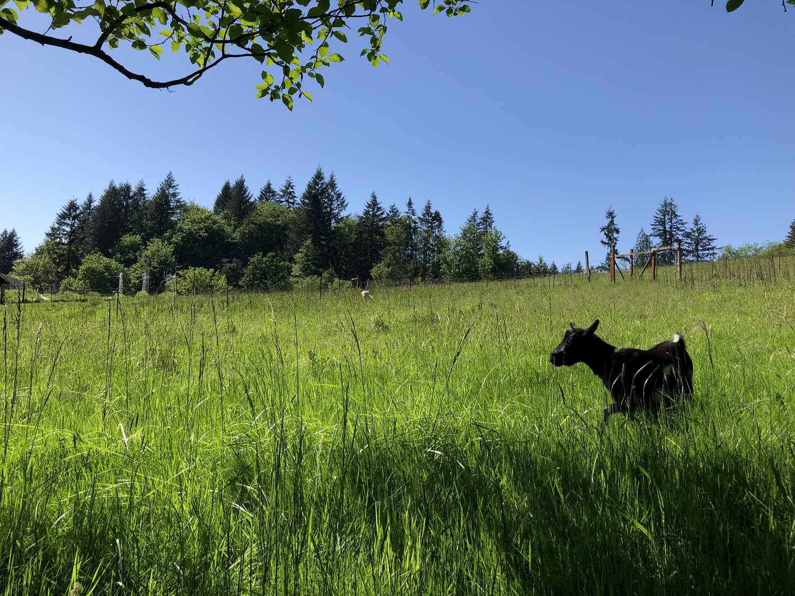
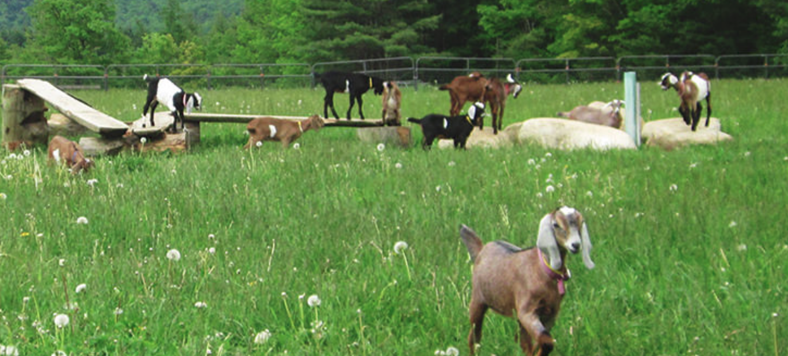
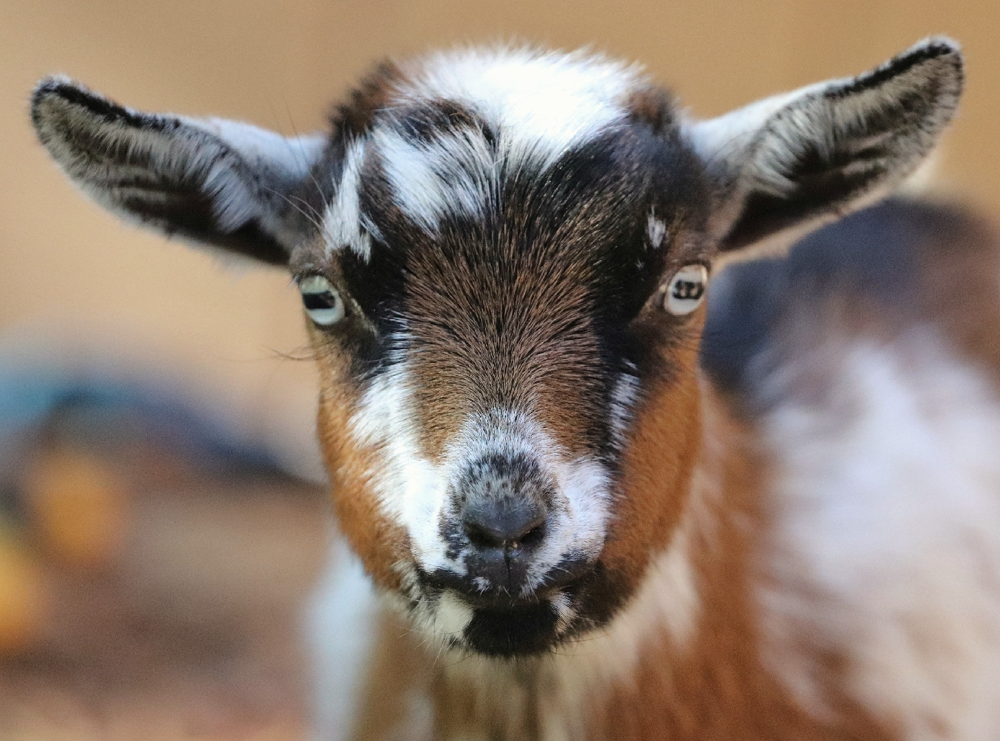
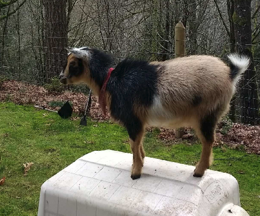
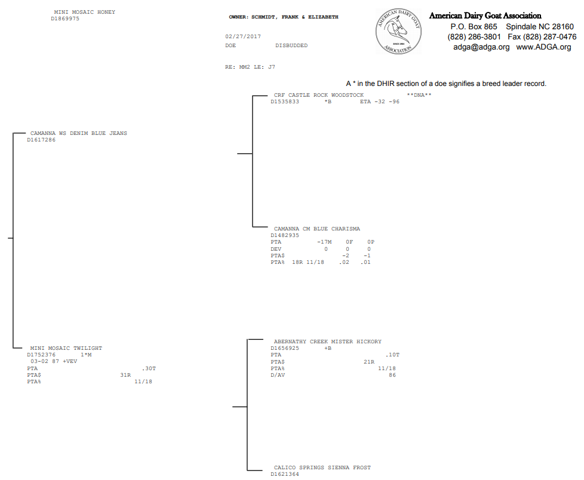
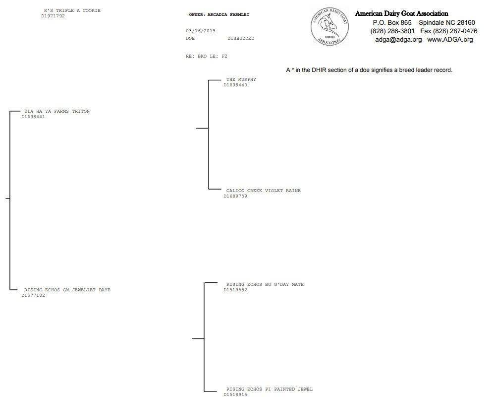
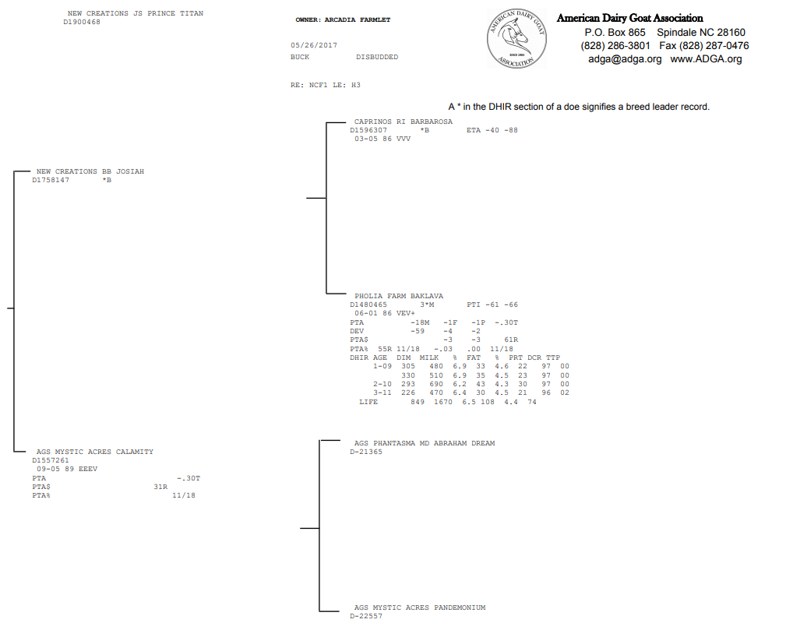

Nigerian Dwarf Goats
At the farmlet, we have a small herd of Nigerian Dwarf goats. These little caprines are known for their small size, friendly personalities, and for the unusually high butterfat content of their milk. This last quality makes them particularly prized by cheese and ice cream makers.


Our goats are all American Dairy Goat Association (ADGA) registered purebred, and we test regularly for common goat ailments including CL, CAE, and Johnes to makes sure our herd stays healthy and happy. Our buck Titan is currently for sale, and if you are interested in reserving one of our kids due in June, please send us a message!
The Arcadia Farmlet Herd - Does
Honey
Age: 2 years
Color: Buckskin
Horns: Disbudded
Kids: Due in June!


Nootka
Age: 4 years
Color: Brown and white
Horns: Disbudded
Kids: Due in June!


Tsuga*
Age: 4 years
Color: White and brown
Horns: Disbudded
Kids: Due in June!
*See pedigree for ADGA name


Salix
Age: 8 months
Color: Gold
Horns: Disbudded
Kids: Not this year!


The Arcadia Farmlet Herd - The Buck
Titan
Age: 1.5 years
Color: Broken buckskin
Horns: Disbudded
Kids: Due in June!

